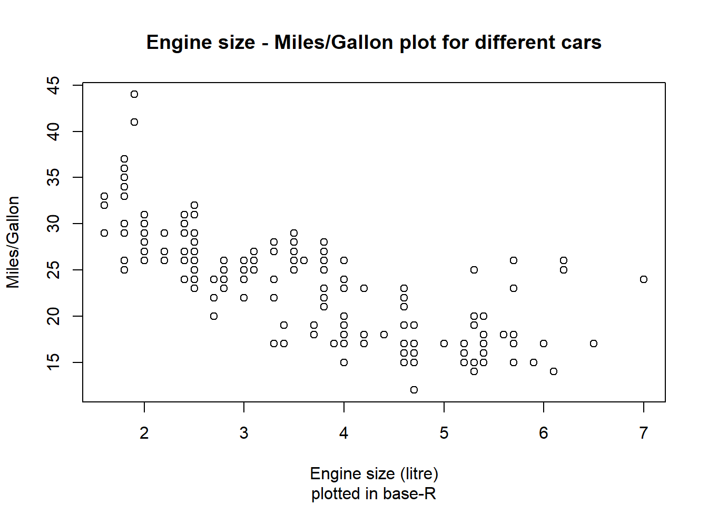
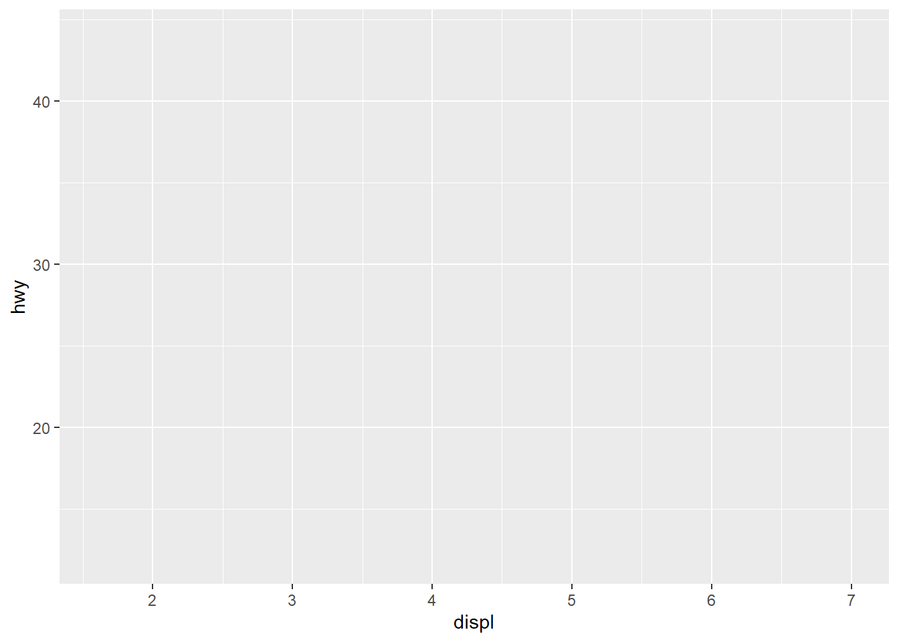

mpg %>% mutate(cyl = as.factor(cyl), year = as.factor(year)) %>%
ggplot(aes(x = displ, y = hwy)) + # X and Y variable
geom_point(aes(alpha = cyl, # opacity based on # of cylinders
shape = year, # year as form for points
colour = fl, # fuel type as colour
size = class # vehicle type as size
)) +
geom_text(aes(label = manufacturer), size = 2, nudge_y = 1.5) + # manufacturer as name
theme_minimal() + theme(legend.position = "none") +
labs(title = "Engine size - Miles/Gallon plot for different cars",
subtitle = "plotted in ggplot2",
x = "Engine size (litre)", y = "Miles/Gallon", colour = "# of cylinders")8 Beautiful data visualizations using ggplot2
This page contains …
… a general overview of how ggplot2 can be used to quickly and easily generate nice-looking and publication-ready data visualizations. I’ll also talk about some of the customization features, displaying many different variables in one plot and provide quick references for annoying problems and methods that I have to look up every time I want to use them.
Why ggplot2?
Even though base-R already comes with multiple functions and features to visually display information (like the plot() and hist() functions), the results are usually not very nice to look at - especially when you think about publishing them in a more professional setting. ggplot2 is one of multiple packages (see also plot_ly) that aims to make data visualizations easy and nice to look at:
data(mpg)
# plotting with base-R command plot()
plot(mpg$displ, mpg$hwy,
# additional labels
main = "Engine size - Miles/Gallon plot for different cars",
sub = "plotted in base-R", xlab = "Engine size (litre)", ylab = "Miles/Gallon")
# plotting with ggplot2 command ggplot() and dplyr-pipes
mpg %>% mutate(cyl = as.factor(cyl)) %>%
ggplot(aes(x = displ, y = hwy)) +
geom_smooth(colour = "dark gray", fill = "light gray") + geom_point(aes(colour = cyl)) + theme_minimal() +
# additional labels
labs(title = "Engine size - Miles/Gallon plot for different cars",
subtitle = "plotted in ggplot2",
x = "Engine size (litre)", y = "Miles/Gallon", colour = "# of cylinders")`geom_smooth()` using method = 'loess' and formula = 'y ~ x'
Two things should be directly noticeable in the plots above: For one, ggplot’s plot is way cleaner and nicer to look at than the base-R plot, with options for colours and additional variables (number of cylinders) as well as measures for tendencies in the data. The other thing to note: ggplot’s command is way more complex and involved to set up than the base-R command.
This complexita is by design, as ggplot2 builds upon an underlying and standardized Grammar of Graphics basiert (the GG in ggplot). Luckily, much of what seems like complexities in the code above can be reduced down to the modularity this approach brings with it - and once you understand the core concepts and modules (or the core vocabulary of the “grammar”), you should be able to understand and write your own visualizations in no time. :)
Modularity: Be my canvas
ggplot2 follows a modular design. This means that the final plot will not be calculated in one step, but instead built up through multiple overlaying partial commands. The amount and design of these commands is entirely up to you, and both the commands you pick as well as their order will impact the final plot. This enables you to build insanely complex plots if you invest the time and energy to learn the underlying ideas and structures.
Setting the stage: ggplot()
Core of this modular approach is the ggplot() command, which serves two functions: On one hand it specifies that everything following is part of a plot and outlines the general canvas, and on the other it can be used to specify global commands and settings that should be true for the entire plot. If you for example want to use the same core data set for all elements in your plot, you could specify this data set for each element individually, or you could include it in the ggplot() function, where you only have to type it out once.
To visualize: Executing an empty ggplot() command produces an empty canvas, in effect only providing a background for your plot (left). If you already include a data set as well as variables (don’t worry, we’ll look at this in detail in a second), you also already get axes overlayed depending on the scaling of your variables:
# empty ggplot function
ggplot()
# ggplot function with global data and axis specification
ggplot(data = mpg, aes(x = displ, y = hwy))

This specification of global parameters is also great to keep an overview over the variables and options used if you want to use multiple visualizations in the same plot (ex. points and lines as in the example above). On a technical level it doesn’t matter which approach you take, as both lead to the same result:
# plot with local vars for each element
ggplot() + geom_point(aes(x = mpg$displ, y = mpg$hwy)) + geom_smooth(aes(x = mpg$displ, y = mpg$hwy))
# plot with global vars for the entire plot
ggplot(data = mpg, aes(x = displ, y = hwy)) + geom_point() + geom_smooth()
Side Notes
- As you can see, if you include parameters in the ggplot() functions, you can use the tidyverse way of giving only column names, whereas the individual functions need a direct reference to the data set used.
- You can also combine both approaches, for example if you want to use the same data set (specified in global function) but different colour palettes for different elements (specified in the local functions) or if you want on element to use an entirely different data source.
As you can see, we can now easily expand our core canvas by chaining further functions with a + at the end of the ggplot() function. The command chain ggplot() + geom_histogram() + labs() would create a canvas (ggplot()), draw a histogram of the specified data on top of it (geom_histogram()) and then overwrite the automatically generated names for parts of the plot with the names specified in labs(). Because each element is evaluated separate from the others, it is important to close all opened brackets before a +!
Used data and aesthetics: aes()
As can be seen above, used data and other aesthetic arguments have to be specified within a aes() command nested inside the command for an element (or the global command). Correctly nesting this function is an essential step and usually the primary source of issues if something doesn’t work with your code. The aes() command can take not only variables to display on the x and y axis, but also variables that should be used to define other attributes of the plot, like colour or fill and a whole host of further options.
HOWEVER: Just because arguments like colour and fill can be specified inside aes(), that doesn’t mean they have to. You can also specify these aspects outside of aes() if you want to set them to a specific value rather than base them on a variable:
# colour inside aes -> colour based on variable
mpg %>% mutate(cyl = as.factor(cyl)) %>%
ggplot(aes(x = displ, y = hwy)) +
geom_point(aes(colour = cyl)) + theme_minimal() +
labs(title = "Engine size - Miles/Gallon plot for different cars",
x = "Engine size (litre)", y = "Miles/Gallon", colour = "# of cylinders")
# colour outside aes -> colour takes specified value
mpg %>% mutate(cyl = as.factor(cyl)) %>%
ggplot(aes(x = displ, y = hwy)) +
geom_point(colour = "blue") + theme_minimal() +
labs(title = "Engine size - Miles/Gallon plot for different cars",
x = "Engine size (litre)", y = "Miles/Gallon", colour = "# of cylinders")
Important
To preempt upcoming confusions: You will get errors when you specify a variable colour outside aes(), but you won’t when you specify a definite colour inside aes(). Instead, code like geom_point(aes(colour = "blue")) will make R look for the variable blue in your data - and if that doesn’t exist, it will simply treat all cases as having the same value for this attribute and assign the first colour of the standard colour palette - which is red. So, if you ever wonder why “blue” appears as red in your plot, this might be why.
Side Note
Knowing when to use colour or fill is a whole headache in and of it self and depends on the chosen visualization method. Generally, fill is used for the inside fill of an element, while colour is used for borders and edges - with geom_point() being the most prominent exception and using only the colour attribute for points.
Visualization elements: geom_...
As you have seen in the previous examples, geom_...functions build on the defined canvas and offer the meat of data visualization. If you enter “geom_” in RStudio, you will see that the autocomplete function offers you a wide array of different options for plotting your data, from lines up to entire maps.
Important
When choosing a visualization element for your plots, always keep an eye on the arguments the associated function takes! Especially bar plots and histograms only take an x variable as input and derive y from frequency distributions of x. Manually specifying y in the geom-function (or the global ggplot-function) will lead to errors and annoyances.
In theory, the modular nature of ggplot2 allows you to stack as many elements on top of each other. However, keep the modular buildup of ggplot in mind: The most frequent element will overlay any element specified prior to it!
# dots after line, dots overlay
mpg %>% mutate(cyl = as.factor(cyl)) %>%
ggplot(aes(x = displ, y = hwy)) +
geom_smooth(colour = "black", fill = "dark gray") + geom_point(aes(colour = cyl)) + theme_minimal() +
labs(x = "Engine size (litre)", y = "Miles/Gallon", colour = "# of cylinders")
# line after dots, line overlays
mpg %>% mutate(cyl = as.factor(cyl)) %>%
ggplot(aes(x = displ, y = hwy)) +
geom_point(aes(colour = cyl)) + theme_minimal() + geom_smooth(colour = "black", fill = "dark gray") +
labs(x = "Engine size (litre)", y = "Miles/Gallon", colour = "# of cylinders")Other central building blocks
Aside from geom_... functions, ggplot packs a whole load of additional functions to improve and/or modify the way you display your data. I have already used the labs()function in multiple plots to specify my own names for for axes, legends or the entire plot, rather than the defaults, which are derived from variable names in your input data. Further options using additional functions are scale transformations (using for example scale_x_log10() or scale_y_data()), different colour palettes (ex. scale_colour_gradient() or scale_fill_manual()for custom palettes), as well as overarching design themes for the entire plot, like theme_minimal().
Side Note
Don’t know if you’ve noticed, but these functions are available in many different versions for many different use cases. Anything you find under scale_x_... will have an equivalent under scale_y_... depending on which variable you want to transform. Same goes for the other arguments, with scale_colour_... and scale_fill_... containing much of the same functions, only applied in different contexts.
Everything all at once - information overload
As I’ve said before, you can tweak a wide array of elements to your liking - I’ve simply focused on colour and fill as I think these will be the two most frequently used elements. But you can go further: Tweak the shape of points, the thickness of lines, the opacity of bars or whatever else you want! Heck, put it all together on one plot and make everything entirely unreadable - but undeniably unique:
Presentation and colours
As you have already seen multiple times by now, you can change basically the entirety of a plot’s presentation and resulting graphics. This can be of great help when it comes to generating plots that present large amounts of data in a readable format. I want to use this short section to highlight two different approaches to make this customization even more powerful:
For colours, I very much like using Brewer palettes (use scale_..._brewer(palette="Name") in ggplot) for discrete values and viridis palettes (use scale_..._viridis_c(option=LetterOrName)) for continuous values (viridis can also handle binned or discrete scales with …_b and …_d respectively).
Although I am partial to minimalism and therefore like theme_minimal() a lot, you can also expand the range of available plot themes with something like ggthemes if you like excel too much. You can also create and use your own theme if you like. For an easier time, have a look at the ggCorpIdent package - however, keep in mind that Tufte (2001) is right when he says that minimal and clear visualizations are often superior to everything else.
Side Note
To get on my little soap box for a moment, I think that everyone who wants to create good visualizations should read Tufte (2001) at some point. Not because you should follow everything he says, but simply to raise awareness for some of the issues in data communication. Don’t worry, the book isn’t that long and it features a whole range of pretty images. :)
Special use cases and tricks
Sub-plots based on variables
Using facet_grid() (or the less strict facet_wrap()), you can create subgraphs based on variables in your data set. That way, you could for example compare value distributions between different points in time. This is another way to display additional data without visual clutter as we’ve seen it in the above image. Based on your specifications, you can enter up to two variables to build subplots out of, using the formula facet_grid(verticalVariable ~ horizontalVariable) - however, you can leave one argument empty, if you just want one variable to control the split: facet_grid( ~ horizontalVariable):
# facet_wrap based on year
mpg %>% mutate(cyl = as.factor(cyl)) %>%
ggplot(aes(x = displ, y = hwy)) +
geom_smooth(colour = "dark gray", fill = "light gray") + geom_point(aes(colour = cyl)) +
labs(title = "Engine size - Miles/Gallon plot for different cars",
subtitle = "plotted in ggplot2",
x = "Engine size (litre)", y = "Miles/Gallon", colour = "# of cylinders") +
facet_wrap(.~year)
# facet_grid based on # of cylinders and year - notice empty fields for 1999 and 5 cyl
mpg %>% mutate(cyl = as.factor(cyl)) %>%
ggplot(aes(x = displ, y = hwy)) +
geom_smooth(colour = "dark gray", fill = "light gray") + geom_point(aes(colour = cyl)) +
labs(title = "Engine size - Miles/Gallon plot for different cars",
subtitle = "plotted in ggplot2",
x = "Engine size (litre)", y = "Miles/Gallon", colour = "# of cylinders") +
facet_grid(cyl~year)
Side Note
In a case like this one, it would probably better not to use global axes, in order to better see differences within groups at the cost of visual differences between groups. to achieve this, you can set a scales parameter inside facet_... to “free_x”, “free_y” or “free” (both).
Different axes in one plot
This is a niche case you may or may not encounter eventually, but I’ve had to deal with it twice and have been annoyed every time - which means I write this mostly for myself, so I can easily find it again.
As mentioned in the beginning, axes in ggplot are calculated globally depending on your data - even if you plug in different data sources, the result is a single, global scale depending on the minimum of the smaller variable and the maximum of the larger variable. To display data on two different scales at the same time, a bit of annoying trickery is needed: You simply have to scale up the second variable so that it fits inside the scale of the first variable, add a second axis for this variable, and re-transform the labels on this axis back to the original size via a command like scale_y_continuous(sec.axis = sec_axis(~ . FORMEL)). In practice:
# data frame with two y values and x value "month"
climate <- data.frame(month = 1:12,
temp = c(-4,-4,0,5,11,15,16,15,11,6,1,-3),
precip = c(49,36,47,41,53,65,81,89,90,84,73,55))
climate %>% mutate(precip = precip / 8) %>% # recode precipitation to temp scale
ggplot(aes(x = month)) +
geom_col(aes(y = precip), fill = "light blue") + # add precipitation
geom_line(aes(y = temp), colour = "red", size = 1.5) + # add temperature
# now recode the secondary axis back to the original scale
scale_y_continuous("Temperature", sec.axis = sec_axis(~ . * 8, name = "Precipitation")) +
labs(x = "Month", title = "Climatogram for Oslo (1961-1990)") + # add title
geom_hline(yintercept = 0) + theme_minimal() # toy around a bit moreGoing even further beyond
As you can see, the possibilities ggplot offers are (nearly) endless! And if you add further R-packages to the mix, you can build plots that are even more insane. If you want to be inspired, have a look at this: https://r-statistics.co/Top50-Ggplot2-Visualizations-MasterList-R-Code.html
If you want to learn more, I encourage you to just toy around a bit with ggplot. Once you understand the core format and the underlying grammar, you’ll be able to generate great plots in no time. And if you’re ever stuck, the internet has a wealth of knowledge around solving specific issues, whatever they may be. For further reading on ggplot, I’d also encourage you to have a look at the ggplot2 webseite and the R-Cookbook for graphs. Oh and read Tufte (2001)!
Last modified: 2023-09-20 11:16, R version 4.3.1
Source data for this page can be found here.